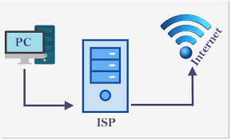

Um arquivo ISO é uma cópia idêntica (imagem) de arquivos gravados num CD, DVD ou BD. Essas imagens são compostas pelo conteúdo total dos dados contidos num disco óptico, incluindo sistema de boot, número de setores gravados, sistema operacional e sistema de arquivos.

A principal função de um Sistema de prevenção de intrusão (Intrusion Prevention System, IPS) é identificar qualquer atividade suspeita e detectar e permitir (IDS) ou prevenir (IPS) a ameaça. A tentativa é registrada e relatada aos gerentes de rede ou à equipe do Security Operations Center (SOC)